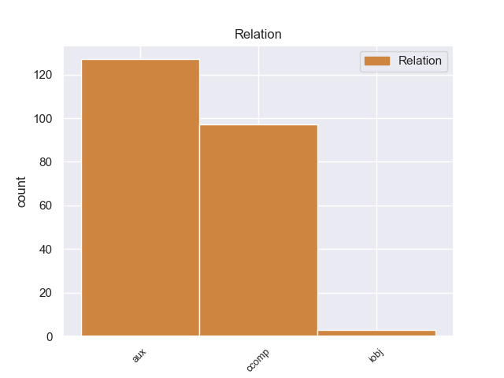
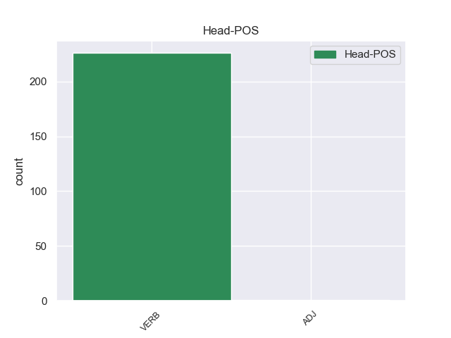
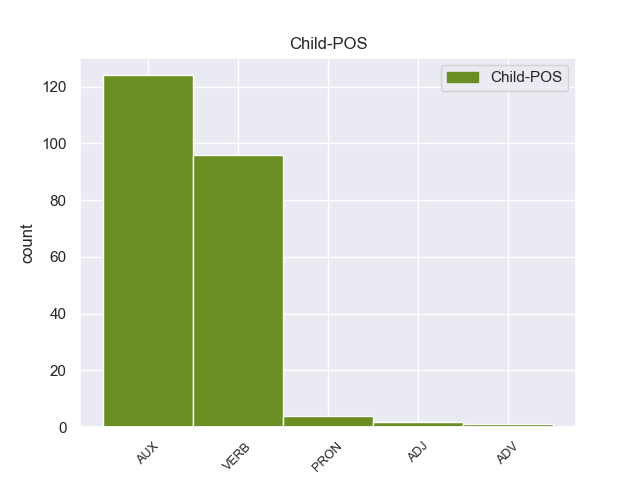

Distribution of features within this leaf



Agreement Rules sorted by frequency.
- When the dependent token is the clausal complement(ccomp) of the head token,
1 Θέλω _ _ _ _ 0 _ _ _
2 να _ _ _ _ 0 _ _ _
3 σχολιάσω _ _ _ _ 0 _ _ _
4 τις _ _ _ _ 0 _ _ _
5 παρατηρήσεις _ _ _ _ 0 _ _ _
6 του _ _ _ _ 0 _ _ _
7 κ. _ _ _ _ 0 _ _ _
8 MacCormick _ _ _ _ 0 _ _ _
9 διότι _ _ _ _ 0 _ _ _
10 μου _ _ _ _ 0 _ _ _
11 φαίνεται φαίνεταιr VERB _ Mood=Ind|Number=Sing|Person=3|Tense=Pres|VerbForm=Fin 0 _ _ _
12 ότι _ _ _ _ 0 _ _ _
13 διαμαρτυρείται διαμαρτυρείταιr VERB _ Mood=Ind|Number=Sing|Person=3|Tense=Pres|VerbForm=Fin 11 ccomp _ _
14 υπερβολικά _ _ _ _ 0 _ _ _
15 . _ _ _ _ 0 _ _ _
1 Μια _ _ _ _ 0 _ _ _
2 δημόσια _ _ _ _ 0 _ _ _
3 σύμβαση _ _ _ _ 0 _ _ _
4 δεν _ _ _ _ 0 _ _ _
5 μπορεί poρείr AUX _ Mood=Ind|Number=Sing|Person=3|Tense=Pres|VerbForm=Fin 7 aux _ _
6 να _ _ _ _ 0 _ _ _
7 περιλαμβάνει περιλαμβάνειr VERB _ Mood=Ind|Number=Sing|Person=3|Tense=Pres|VerbForm=Fin 0 _ _ _
8 την _ _ _ _ 0 _ _ _
9 απαίτηση _ _ _ _ 0 _ _ _
10 από _ _ _ _ 0 _ _ _
11 τους _ _ _ _ 0 _ _ _
12 κατασκευαστές _ _ _ _ 0 _ _ _
13 λεωφορείων _ _ _ _ 0 _ _ _
14 να _ _ _ _ 0 _ _ _
15 κάνουν _ _ _ _ 0 _ _ _
16 περιβαλλοντική _ _ _ _ 0 _ _ _
17 εκτίμηση _ _ _ _ 0 _ _ _
18 για _ _ _ _ 0 _ _ _
19 το _ _ _ _ 0 _ _ _
20 Ελσίνκι _ _ _ _ 0 _ _ _
21 πριν _ _ _ _ 0 _ _ _
22 να _ _ _ _ 0 _ _ _
23 υποβάλλουν _ _ _ _ 0 _ _ _
24 τη _ _ _ _ 0 _ _ _
25 σύμβαση _ _ _ _ 0 _ _ _
26 . _ _ _ _ 0 _ _ _
Disagree Examples:
1 En _ _ _ _ 0 _ _ _
2 la _ _ _ _ 0 _ _ _
3 historia _ _ _ _ 0 _ _ _
4 reciente _ _ _ _ 0 _ _ _
5 de _ _ _ _ 0 _ _ _
6 el _ _ _ _ 0 _ _ _
7 grupo _ _ _ _ 0 _ _ _
8 y _ _ _ _ 0 _ _ _
9 durante _ _ _ _ 0 _ _ _
10 su _ _ _ _ 0 _ _ _
11 poco _ _ _ _ 0 _ _ _
12 tiempo _ _ _ _ 0 _ _ _
13 de _ _ _ _ 0 _ _ _
14 vida _ _ _ _ 0 _ _ _
15 han haber AUX _ Mood=Ind|Number=Plur|Person=3|Tense=Pres|VerbForm=Fin 16 aux _ _
16 pasado pasar VERB _ Gender=Masc|Number=Sing|Tense=Past|VerbForm=Part 0 _ _ _
17 pocos _ _ _ _ 0 _ _ _
18 músicos _ _ _ _ 0 _ _ _
19 , _ _ _ _ 0 _ _ _
20 todos _ _ _ _ 0 _ _ _
21 sus _ _ _ _ 0 _ _ _
22 componentes _ _ _ _ 0 _ _ _
23 originales _ _ _ _ 0 _ _ _
24 fueron _ _ _ _ 0 _ _ _
25 los _ _ _ _ 0 _ _ _
26 primeros _ _ _ _ 0 _ _ _
27 que _ _ _ _ 0 _ _ _
28 empezaron _ _ _ _ 0 _ _ _
29 justamente _ _ _ _ 0 _ _ _
30 desde _ _ _ _ 0 _ _ _
31 inicio _ _ _ _ 0 _ _ _
32 de _ _ _ _ 0 _ _ _
33 el _ _ _ _ 0 _ _ _
34 grupo _ _ _ _ 0 _ _ _
35 , _ _ _ _ 0 _ _ _
36 a _ _ _ _ 0 _ _ _
37 excepción _ _ _ _ 0 _ _ _
38 de _ _ _ _ 0 _ _ _
39 bajo _ _ _ _ 0 _ _ _
40 . _ _ _ _ 0 _ _ _
1 De _ _ _ _ 0 _ _ _
2 Baba _ _ _ _ 0 _ _ _
3 Adam _ _ _ _ 0 _ _ _
4 se _ _ _ _ 0 _ _ _
5 dice _ _ _ _ 0 _ _ _
6 que _ _ _ _ 0 _ _ _
7 tuvo _ _ _ _ 0 _ _ _
8 un _ _ _ _ 0 _ _ _
9 contemporáneo _ _ _ _ 0 _ _ _
10 de _ _ _ _ 0 _ _ _
11 el _ _ _ _ 0 _ _ _
12 famoso _ _ _ _ 0 _ _ _
13 Rani _ _ _ _ 0 _ _ _
14 Bhawani _ _ _ _ 0 _ _ _
15 de _ _ _ _ 0 _ _ _
16 Natore _ _ _ _ 0 _ _ _
17 , _ _ _ _ 0 _ _ _
18 de _ _ _ _ 0 _ _ _
19 quien _ _ _ _ 0 _ _ _
20 se _ _ _ _ 0 _ _ _
21 dice decir VERB _ Mood=Ind|Number=Sing|Person=3|Tense=Pres|VerbForm=Fin 0 _ _ _
22 que _ _ _ _ 0 _ _ _
23 , _ _ _ _ 0 _ _ _
24 debido _ _ _ _ 0 _ _ _
25 a _ _ _ _ 0 _ _ _
26 sus _ _ _ _ 0 _ _ _
27 magnánimas _ _ _ _ 0 _ _ _
28 características _ _ _ _ 0 _ _ _
29 , _ _ _ _ 0 _ _ _
30 tuvo tener VERB _ Mood=Ind|Number=Sing|Person=3|Tense=Past|VerbForm=Fin 21 ccomp _ _
31 un _ _ _ _ 0 _ _ _
32 depósito _ _ _ _ 0 _ _ _
33 en _ _ _ _ 0 _ _ _
34 el _ _ _ _ 0 _ _ _
35 lugar _ _ _ _ 0 _ _ _
36 que _ _ _ _ 0 _ _ _
37 se _ _ _ _ 0 _ _ _
38 lo _ _ _ _ 0 _ _ _
39 dedicaron _ _ _ _ 0 _ _ _
40 a _ _ _ _ 0 _ _ _
41 el _ _ _ _ 0 _ _ _
42 santo _ _ _ _ 0 _ _ _
43 fakir _ _ _ _ 0 _ _ _
44 en _ _ _ _ 0 _ _ _
45 honor _ _ _ _ 0 _ _ _
46 a _ _ _ _ 0 _ _ _
47 sus _ _ _ _ 0 _ _ _
48 poderes _ _ _ _ 0 _ _ _
49 sobrenaturales _ _ _ _ 0 _ _ _
50 . _ _ _ _ 0 _ _ _
1 En _ _ _ _ 0 _ _ _
2 Madrid _ _ _ _ 0 _ _ _
3 , _ _ _ _ 0 _ _ _
4 José _ _ _ _ 0 _ _ _
5 cree creer VERB _ Mood=Ind|Number=Sing|Person=3|Tense=Pres|VerbForm=Fin 0 _ _ _
6 que _ _ _ _ 0 _ _ _
7 tendrá tener VERB _ Mood=Ind|Number=Sing|Person=3|Tense=Fut|VerbForm=Fin 5 ccomp _ _
8 más _ _ _ _ 0 _ _ _
9 posibilidades _ _ _ _ 0 _ _ _
10 de _ _ _ _ 0 _ _ _
11 conseguir _ _ _ _ 0 _ _ _
12 lo _ _ _ _ 0 _ _ _
13 que _ _ _ _ 0 _ _ _
14 se _ _ _ _ 0 _ _ _
15 ha _ _ _ _ 0 _ _ _
16 convertido _ _ _ _ 0 _ _ _
17 en _ _ _ _ 0 _ _ _
18 su _ _ _ _ 0 _ _ _
19 obsesión _ _ _ _ 0 _ _ _
20 , _ _ _ _ 0 _ _ _
21 grabar _ _ _ _ 0 _ _ _
22 un _ _ _ _ 0 _ _ _
23 disco _ _ _ _ 0 _ _ _
24 con _ _ _ _ 0 _ _ _
25 varios _ _ _ _ 0 _ _ _
26 temas _ _ _ _ 0 _ _ _
27 que _ _ _ _ 0 _ _ _
28 ha _ _ _ _ 0 _ _ _
29 compuesto _ _ _ _ 0 _ _ _
30 . _ _ _ _ 0 _ _ _
1 En _ _ _ _ 0 _ _ _
2 Madrid _ _ _ _ 0 _ _ _
3 , _ _ _ _ 0 _ _ _
4 José _ _ _ _ 0 _ _ _
5 cree _ _ _ _ 0 _ _ _
6 que _ _ _ _ 0 _ _ _
7 tendrá _ _ _ _ 0 _ _ _
8 más _ _ _ _ 0 _ _ _
9 posibilidades _ _ _ _ 0 _ _ _
10 de _ _ _ _ 0 _ _ _
11 conseguir _ _ _ _ 0 _ _ _
12 lo _ _ _ _ 0 _ _ _
13 que _ _ _ _ 0 _ _ _
14 se _ _ _ _ 0 _ _ _
15 ha haber AUX _ Mood=Ind|Number=Sing|Person=3|Tense=Pres|VerbForm=Fin 16 aux _ _
16 convertido convertir VERB _ Gender=Masc|Number=Sing|Tense=Past|VerbForm=Part 0 _ _ _
17 en _ _ _ _ 0 _ _ _
18 su _ _ _ _ 0 _ _ _
19 obsesión _ _ _ _ 0 _ _ _
20 , _ _ _ _ 0 _ _ _
21 grabar _ _ _ _ 0 _ _ _
22 un _ _ _ _ 0 _ _ _
23 disco _ _ _ _ 0 _ _ _
24 con _ _ _ _ 0 _ _ _
25 varios _ _ _ _ 0 _ _ _
26 temas _ _ _ _ 0 _ _ _
27 que _ _ _ _ 0 _ _ _
28 ha _ _ _ _ 0 _ _ _
29 compuesto _ _ _ _ 0 _ _ _
30 . _ _ _ _ 0 _ _ _
1 En _ _ _ _ 0 _ _ _
2 Madrid _ _ _ _ 0 _ _ _
3 , _ _ _ _ 0 _ _ _
4 José _ _ _ _ 0 _ _ _
5 cree _ _ _ _ 0 _ _ _
6 que _ _ _ _ 0 _ _ _
7 tendrá _ _ _ _ 0 _ _ _
8 más _ _ _ _ 0 _ _ _
9 posibilidades _ _ _ _ 0 _ _ _
10 de _ _ _ _ 0 _ _ _
11 conseguir _ _ _ _ 0 _ _ _
12 lo _ _ _ _ 0 _ _ _
13 que _ _ _ _ 0 _ _ _
14 se _ _ _ _ 0 _ _ _
15 ha _ _ _ _ 0 _ _ _
16 convertido _ _ _ _ 0 _ _ _
17 en _ _ _ _ 0 _ _ _
18 su _ _ _ _ 0 _ _ _
19 obsesión _ _ _ _ 0 _ _ _
20 , _ _ _ _ 0 _ _ _
21 grabar _ _ _ _ 0 _ _ _
22 un _ _ _ _ 0 _ _ _
23 disco _ _ _ _ 0 _ _ _
24 con _ _ _ _ 0 _ _ _
25 varios _ _ _ _ 0 _ _ _
26 temas _ _ _ _ 0 _ _ _
27 que _ _ _ _ 0 _ _ _
28 ha haber AUX _ Mood=Ind|Number=Sing|Person=3|Tense=Pres|VerbForm=Fin 29 aux _ _
29 compuesto componer VERB _ Gender=Masc|Number=Sing|Tense=Past|VerbForm=Part 0 _ _ _
30 . _ _ _ _ 0 _ _ _